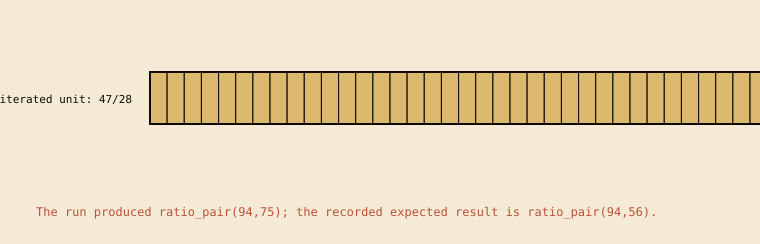
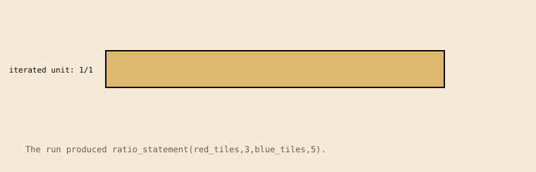
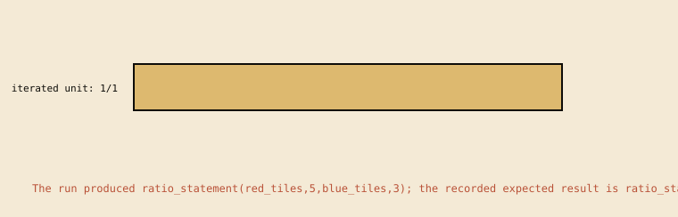
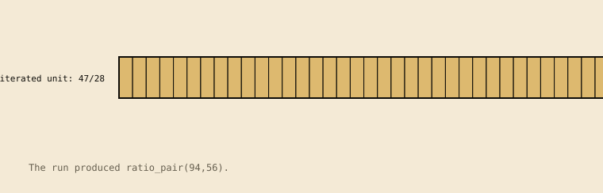

Construction: canonical action sequences merge by common prefix and structurally identical suffix. Branch labels name the kinds taking each branch. This models shared doing under canonical action names; the automata do not literally share states. For graphs with loops, the construction uses simple accepting paths and does not unfold repeated traversals.
1.additive_extension_of_ratio

The run produced ratio_pair(94,75); the recorded expected result is ratio_pair(94,56). The scene is derived from the contract run (5tracesteps).Recorded transition graph; local action names remain on the edges.
ratio_action_pairs.pl:132 observed on {"a": 47, "b": 28} observed on {"a": 48, "b": 28} (derivedtemplate)
q_step_1
compute_first_term_increment
q_step_2
ratio_action_pairs.pl:132 observed on {"a": 47, "b": 28} observed on {"a": 48, "b": 28} (derivedtemplate)
q_step_2
add_first_term_increment_to_second_term
q_step_3
ratio_action_pairs.pl:132 observed on {"a": 47, "b": 28} observed on {"a": 48, "b": 28} (derivedtemplate)
q_step_3
compose_additive_pair
q_step_4
ratio_action_pairs.pl:132 observed on {"a": 47, "b": 28} observed on {"a": 48, "b": 28} (derivedtemplate)
q_step_4
lose_multiplicative_unit_ratio
q_accept
ratio_action_pairs.pl:132 observed on {"a": 47, "b": 28} observed on {"a": 48, "b": 28} (derivedtemplate)
Computed structure:linear_trace. no recorded branch or loop; the table records one accepting run. 6 states, 5 distinct actions, 0 branching states, 0 loop edges; 5 static rows and 10 observed rows.
2.construct_referent_ratio_diagram

The run produced ratio_statement(red_tiles,3,blue_tiles,5). The scene is derived from the contract run (5tracesteps).Recorded transition graph; local action names remain on the edges.
Computed structure:linear_trace. no recorded branch or loop; the table records one accepting run. 6 states, 5 distinct actions, 0 branching states, 0 loop edges; 5 static rows and 5 observed rows.
3.reverse_ratio_referent_order

The run produced ratio_statement(red_tiles,5,blue_tiles,3); the recorded expected result is ratio_statement(red_tiles,3,blue_tiles,5). The scene is derived from the contract run (4tracesteps).Recorded transition graph; local action names remain on the edges.
Computed structure:linear_trace. no recorded branch or loop; the table records one accepting run. 5 states, 4 distinct actions, 0 branching states, 0 loop edges; 4 static rows and 4 observed rows.
4.scale_ratio_unit

The run produced ratio_pair(94,56). The scene is derived from the contract run (6tracesteps).Recorded transition graph; local action names remain on the edges.
ratio_action_pairs.pl:107 observed on {"a": 47, "b": 28} observed on {"a": 48, "b": 28} (derivedtemplate)
q_step_1
identify_scale_factor
q_step_2
ratio_action_pairs.pl:107 observed on {"a": 47, "b": 28} observed on {"a": 48, "b": 28} (derivedtemplate)
q_step_2
scale_first_term_multiplicatively
q_step_3
ratio_action_pairs.pl:107 observed on {"a": 47, "b": 28} observed on {"a": 48, "b": 28} (derivedtemplate)
q_step_3
scale_second_term_multiplicatively
q_step_4
ratio_action_pairs.pl:107 observed on {"a": 47, "b": 28} observed on {"a": 48, "b": 28} (derivedtemplate)
q_step_4
compose_equivalent_ratio
q_step_5
ratio_action_pairs.pl:107 observed on {"a": 47, "b": 28} observed on {"a": 48, "b": 28} (derivedtemplate)
q_step_5
preserve_multiplicative_unit_ratio
q_accept
ratio_action_pairs.pl:107 observed on {"a": 47, "b": 28} observed on {"a": 48, "b": 28} (derivedtemplate)
Computed structure:linear_trace. no recorded branch or loop; the table records one accepting run. 7 states, 6 distinct actions, 0 branching states, 0 loop edges; 6 static rows and 12 observed rows.